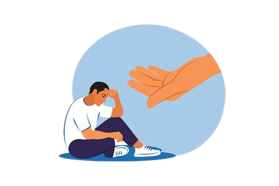
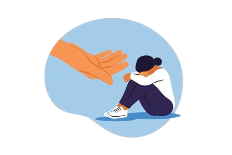

θεός δίκη
Die Gerechtigkeit Gottes
Egal ob Mobbing, Armut, Krieg oder Naturkatastrophen – die Welt ist voller Leid, und es kann jeden treffen.
Dabei spielt es keine Rolle, wer man ist oder was man getan hat; für niemanden ist die Welt perfekt.
Dieser Umstand stellt jeden, der an einen Gott glaubt, vor die Frage, warum dieser solche schlimmen Dinge überhaupt zulässt –
die Theodizee-Frage.
Diese stellt den Glauben und das Gottesbild mehrerer Milliarden Menschen (religionsübergreifend) fundamental infrage
und ist dadurch nicht nur für Christen, sondern auch für Muslime, Juden und Andersgläubige eine der größten
Herausforderungen, wenn es um die Instandhaltung des eigenen Weltbildes geht.

Das Problem: Gott wird im Allgemeinen mit drei wesentlichen Eigenschaften beschrieben: allmächtig, allliebend und allwissend. Demnach müsste er in der Lage sein, eine Welt ohne jegliche Form von Leid zu erschaffen. Als wohlwollender Gott sollte er auch genau das tun. Offensichtlich ist das jedoch nicht der Fall, beispielsweise im Iran 2026 – was sich nur erklären lässt, indem man eine von Gottes Eigenschaften ausschließt oder annimmt, dass seine Wege für uns Menschen unergründlich sind.
Biblische Perspektive auf Leid
Was das Buch Hiob zum Verständnis des Leidens beitragen kann
Nachdem Gott sich auf eine Wette mit Satan einließ, ob der gläubige Hiob von seinem Glauben abkäme, sobald ihm Leid widerfahre, nimmt Satan Hiobs Wohlstand, Kinder und Gesundheit. Auf sein Leiden hin wird er von seinen Freunden besucht, welche versuchen, ihn mit möglichen Gründen seines Leidens zu trösten:
Elifas von Teman, Bildad von Schuach, Zofar von Naama

Hiobs ältesten drei Freunde erklären ihm, dass sein Leid in einem kausalen Zusammenhang mit seinen früheren Taten steht. Demnach wird Hiob gezielt von Gott für angebliche Sünden bestraft, die er sich in der Vergangenheit schuldig gemacht haben soll. Sie insinuieren damit, dass jegliche Verantwortung und Schuld an seinem Leid einzig und allein bei Hiob liegt, indem sie darauf hinweisen, dass Gott die absolute Gerechtigkeit darstelle und dementsprechend handle.
Für die Theodizee-Frage bedeutet das: Leid ist häufig die Konsequenz menschlicher Taten und des freien Willens.
Elihu

Der jüngste Freund Hiobs widerspricht als Einziger dieser Annahme – und hat damit recht: Hiobs Leid ist keine Strafe, sondern das Ergebnis einer Wette zwischen Gott und Satan. Das weiß Elihu allerdings nicht. Seine Theorie ist, dass Gott Leid als erzieherische Maßnahme nutzt, um größeres Übel zu verhindern. Er kritisiert Hiob für seinen angeblichen Hochmut und ist der Ansicht, dass diese Sünde einen von Gott abbringt – was wiederum zu noch mehr Leid führe.
Hier wird Leid als etwas Unvermeidbares dargestellt, wobei Gottes Wege stets die des geringsten Leides sind.
Theologische Ansätze
Verschiedene Theologen deuten die Existenz von Leid unterschiedlich.
Gottfried Wilhelm Leibniz
Leibniz' Aussagen sind folgende:
- Es gibt unendlich viele mögliche Welten (Universen)
- Gott wählte diejenige, die er für die beste hielt – also jene mit dem wenigsten Leid
-> Unsere Welt ist die bestmögliche aller Welten
Jedoch widerspricht dies dem Anschein eines allmächtigen Gottes
Eine andere Möglichkeit:
- Die Welt wäre ohne Leid nicht die bestmögliche
- Eventuell ist eine leidlose Welt nicht Gottes einziger Weg zur bestmöglich guten Welt
- Verbesserungen an einer Stelle können an anderer Verschlechterungen verursachen
- Gott versucht so viel Leid wie möglich zu vermeiden und gute sowie schlechte Situationen im Gleichgewicht zu halten
TLDR;
Wenn unsere Welt – mit Leid – die beste ist, ist Gott nicht allmächtig; oder wenn er es gewollt hätte, ist er nicht moralisch perfekt.
Hans Jonas
Der Gottesbegriff nach Auschwitz (1987):
- Gottes klassische Eigenschaften sind widersprüchlich und müssen neu gedacht werden
- Jonas ist bereit, sein Gottesbild grundlegend zu ändern
- Für ihn ist es die Allmächtigkeit, die wegfällt
Wie antwortet Jonas auf die Theodizee-Frage?
- Gott hat seine Allmacht nach der Schöpfung abgelegt, damit der Mensch frei sein kann
- Absolute Freiheit kann nur existieren, wenn Gott nicht eingreift – auch nicht um Ungerechtigkeit abzuwenden
- Gott leidet mit den Menschen (z.B. mit denen in Auschwitz) und kann nicht intervenieren
- Leid ist die Konsequenz von Freiheit
- Gott ist uns näher als wir bisher dachten
TLDR;
Leid existiert, weil Gott – um uns absolute Freiheit zu gewähren – auf seine Allmächtigkeit verzichtet hat
und es dadurch nicht abwenden kann.
Umgang mit Leid
Wie Menschen und Religionen auf das Problem des Leidens reagieren
Rechtfertigung des Leidens
- Leid wird durch höhere Zwecke gerechtfertigt – etwa als Prüfung oder als gerechte Strafe für schlechte Taten
- Ohne Leid könnten wir leidfreie Zeiten nicht wertschätzen – Schmerz macht Freude erst erfahrbar
- Leid kann zur moralischen Reifung und persönlichem Wachstum beitragen
Anpassung der Gottesattribute
- Man akzeptiert, dass Gott nicht gleichzeitig allmächtig, allgütig und allwissend sein kann
- Laut Hans Jonas lassen sich nur zwei der drei klassischen Gotteseigenschaften gleichzeitig aufrechterhalten:
z.B.: Wenn Gott verständlich und allmächtig ist, kann er nicht vollkommen gütig sein – sonst würde er eingreifen.
Verweigerung & Resignation
- Die Frage nach dem Leid wird als unlösbar und Gott als unergründlich empfunden und schlicht aufgegeben
- Manche Menschen wenden sich vom Glauben ab – das Leid wird zum Argument gegen die Existenz Gottes
- Diese Haltung entspricht einem praktischen Atheismus angesichts des Theodizeeproblems


Hilfsangebote
Happy getting better
Im Leben begegnen Menschen immer wieder Schmerz, Leid und Verlust. Religion kann dabei helfen, solche Erfahrungen zu bewältigen und ihnen Sinn zu geben. Gleichzeitig kann Leid den Glauben erschüttern und Zweifel auslösen, insbesondere im Zusammenhang mit der Theodizee-Frage nach Gott und Leid. In solchen Situationen kann Unterstützung helfen, mit religiösen Fragen und persönlichem Leid umzugehen. Hier findest du Beispiele, an wen du dich wenden kannst, wenn du gerade in so einer Situation bist:
Telefon Seelsorge
Eine von den christlichen Kirchen finanzierte Hotline für Hilfesuchende (religionsunabhängig)
Rund um die Uhr erreichbar unter:
Psychologische Beratungsstelle EFL Lörrach
Beratungsstelle der Katholischen Kirche
Schwarzwaldstraße 1, 79539 Lörrach
Erreichbar unter: 07621 3087
www.efl-loerrach.deÖrtliche Kirchengemeinde
Dein(e) örtliche(r) Kirchengemeinde oder Pfarrer stehen dir ebenfalls gerne zur Verfügung, wenn du Hilfe brauchst oder Fragen bezüglich deines Glaubens hast.


Quellenangaben
Woher haben wir all die Infos?
- (bibleserver.com) Das Buch Hiob
- (meme-arsenal.com) Bild: Richterin
- (tagesspiegel.de) Bild: Kind mit Mutter
- (sueddeutsche.de) Bild: Iran-Krieg
- (cdnjs.cloudflare.com) Font Awesome Icons
- (svgrepo.com) Seiten-Icon
- (wallhaven.cc) Platzhalterbild
- (freie-referate.de) Hans Jonas zu Theodizee – eine kurze Zusammenfassung
- (suhrkamp.de) Der Gottesbegriff nach Auschwitz – Hans Jonas
- (wikipedia.org) Hans Jonas
- (youtube.com) Der Gottesbegriff nach Auschwitz (Hans Jonas)
- (die-bibel.de) Leiddeutung in theologisch-systematischer Perspektive
- (telefonseelsorge.de) Seelsorge Website
- (efl-loerrach.de) Kirchliche Beratungsstelle Lörrach
- (DuckDuckGo Image Discovery) Mann – Hilfe
- (DuckDuckGo Image Discovery) Frau – Hilfe
- (remove.bg) Hintergrundentfernung
- (deutschlandfunk.de) Sintflut-Bild
- (renovabis.de) Auschwitz-Bild
- (ndr.de) Leibniz – Informationen
- (die-inkognito-philosophin.de) Leibniz – Informationen
Letztzugriff: 12. Apr. 2026